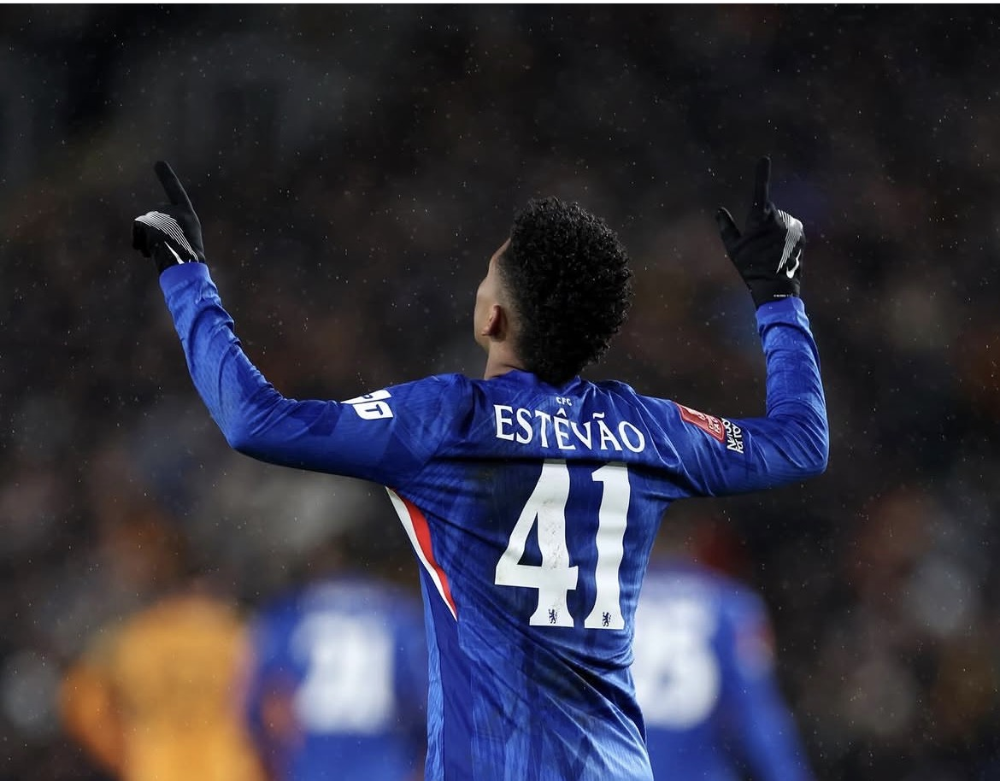
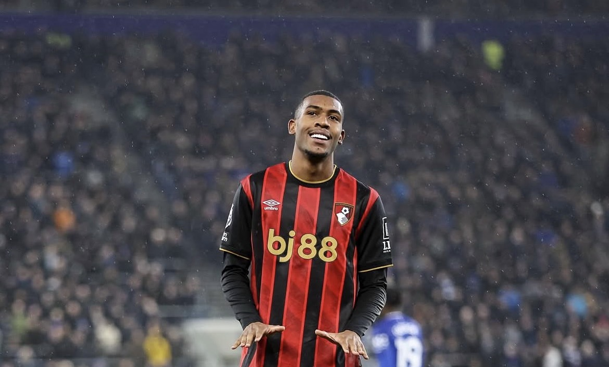
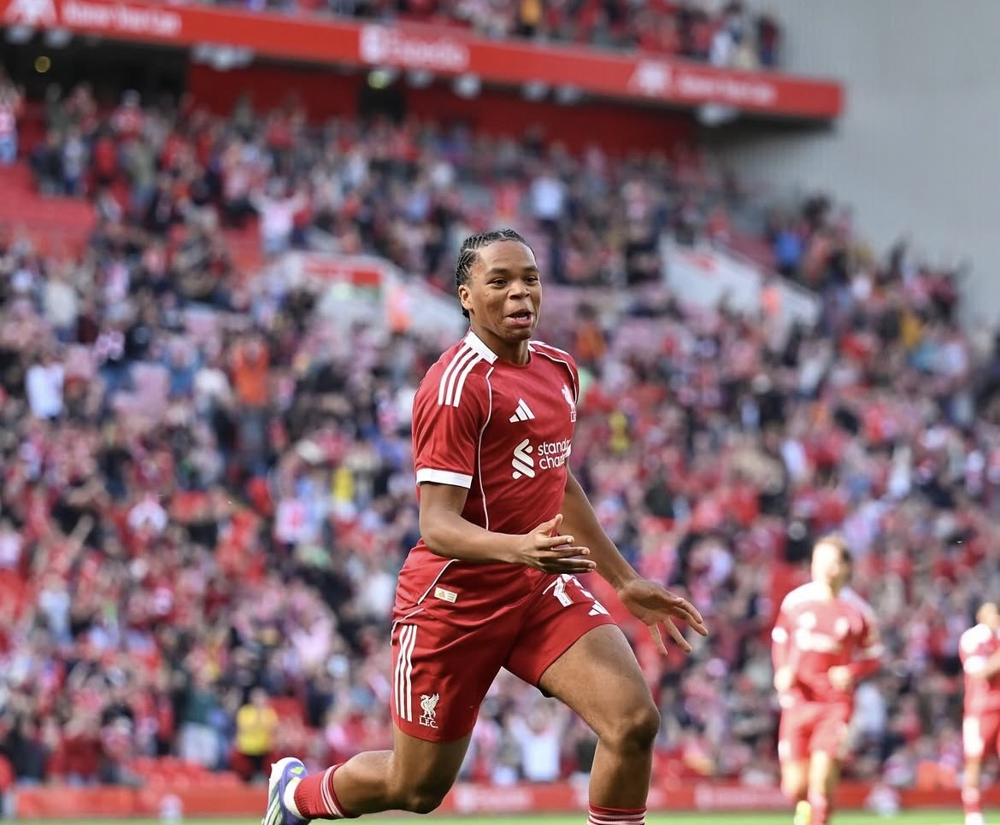
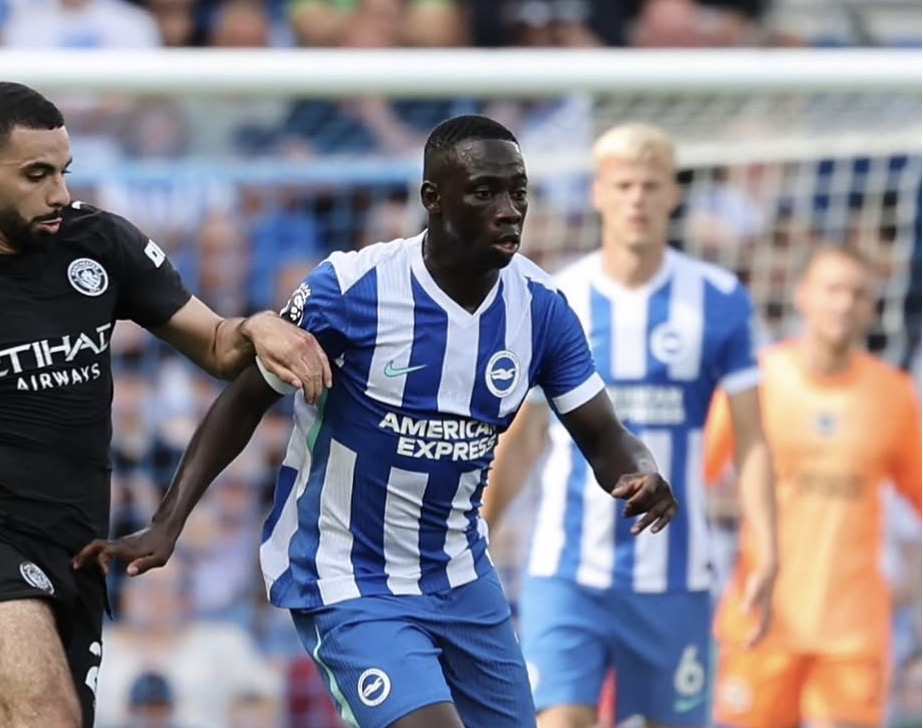
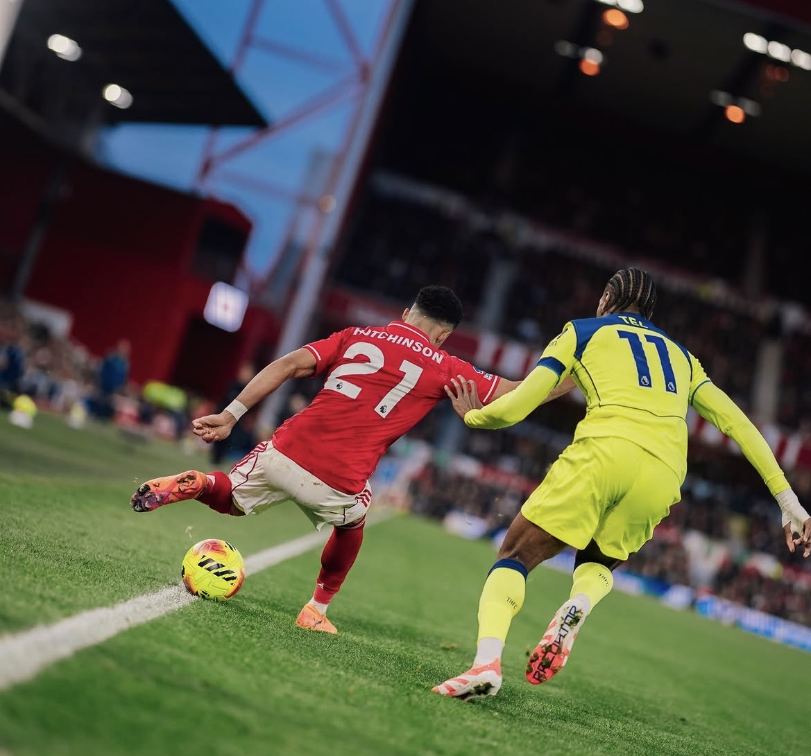

WG
Jeremy Doku
所属: Manchester City/ 身長: 171cm
マンチェスター・シティに所属するベルギー代表FW。世界屈指の爆発的なスピードと異次元のドリブル技術を誇り、一対一で圧倒的な破壊力を発揮。名将ペップの元で進化を続ける、新世代の超攻撃型ウイング。
次世代を担うPLの至宝たち
圧倒的なフィジカルによる対人守備だけでなく、攻撃の起点となる高精度な展開力を備えた次世代のディフェンスリーダー
所属: Manchester City/ 身長: 171cm
マンチェスター・シティに所属するベルギー代表FW。世界屈指の爆発的なスピードと異次元のドリブル技術を誇り、一対一で圧倒的な破壊力を発揮。名将ペップの元で進化を続ける、新世代の超攻撃型ウイング。

WG所属: Chelsea/ 身長: 176cm
チェルシー所属のブラジル代表FW。天才的なドリブルと、強烈な左足のキックを武器とする超大物。10代にして欧州最高峰の舞台で輝きを放つ、世界最注目の神童ウイング。

WG所属: AFC Bournemoth/ 身長: 186cm
ボーンマス所属のブラジル代表FW。185cm超の恵まれたフィジカルと卓越したドリブル、そして強烈な左足のシュートを武器とする大型ウイング。19歳でプレミアへ上陸し、瞬く間に頭角を現した至宝のレフティー。

WG所属: Liverpool / 身長: 170cm
リヴァプールに所属するイングランド世代別代表FW。チェルシーから移籍した、世代屈指の天才ウイング。爆発的なキレを誇るドリブルと高い創造性を武器に、近未来のサッカー界を背負って立つと期待される至宝。

WG所属: Brighton&Hove Albion/ 身長: 180cm
ブライトン所属のガンビア代表FW。爆発的な快速を活かした右サイドからの突破力と、強烈な左足のシュートが武器の韋駄天アタッカー。高い守備強度も兼ね備え、プレミアの舞台で鮮烈な輝きを放つ新星ウイング。

WG所属: Nottingham Forest/ 身長: 174cm
ノッティンガム・フォレスト所属の俊英アタッカー。爆発的なキレを持つドリブルと強烈な左足のキックを武器に、右サイドから次々と決定機を演出。複数ポジションをこなす万能性も魅力な、前線の若き実力者。